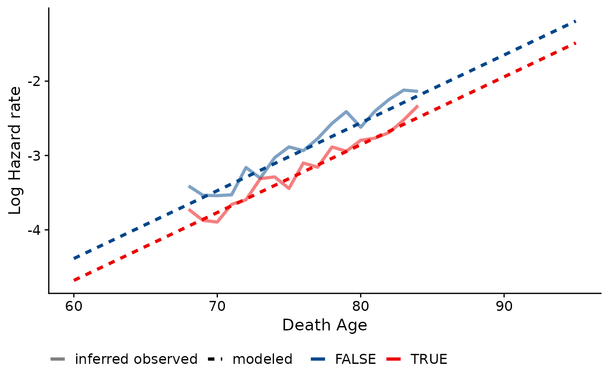

Create diagnostic plot (hazard scale)
diagnostic_plot_hazard.RdCompare empirical and model-based estimated hazard rates within a cohort. Only works with a single discrete covariate and a single cohort. Will plot hazards for to 9 levels/values of the discrete covariate.
Usage
diagnostic_plot_hazard(
data,
object,
covar,
death_var = "death_age",
byear_var = "byear",
xlim = c(65, 110)
)Arguments
- data
data.frame of observed data for gompertz_mle
- object
gompertz_mle object
- covar
covariate of interest
- death_var
death age variable
- byear_var
birth year/cohort variable
- xlim
x-limits for figure
Details
This function assumes that no population denominators exist with which to calculate hazards. Therefore, the "observed" hazards produced are not truly empirical values. Instead, it relies partially on the modeled parameters to compute life table values.
To find these quasi-observed hazards, the modeled Gompertz distribution is used to calculate l(x_min); i.e., the number of survivors to the earliest observable age at death in the data. This is done for each category/level of the specified covariate. Then, the number of observed deaths at each age is used to infer the number of survivors to each subsequent age and the death rate at each age.
Examples
# Create a single-cohort data set
numident_c1920 <- numident_demo %>% dplyr::filter(byear == 1920) %>%
dplyr::mutate(finished_hs = as.factor(educ_yrs >= 12))
# Run gompertz_mle()
gradient <- gompertztrunc::gompertz_mle(formula = death_age ~ finished_hs,
left_trunc = 1988, right_trunc = 2005, data = numident_c1920)
# Create diagnostic hazards plot using model outcome
gompertztrunc::diagnostic_plot_hazard(object = gradient, data = numident_c1920,
covar = "finished_hs", xlim = c(60, 95))
#> Warning: NaNs produced
#> Warning: Using alpha for a discrete variable is not advised.
#> Warning: Removed 4 row(s) containing missing values (geom_path).
